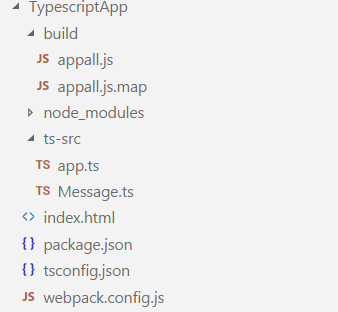

TypeScript
- npm init(initialize-package.json)
- Install typescript : npm install --save-dev typescript
- Add Folder (dir\src) then add a ts file "Message.ts"
- Add starting point of application : 'dir\app.ts'
- Add tsconfig.json for ts compilation and mention the starting point
- compile the ts file with cmd : node_modules\.bin\tsc
- We can use task runner to compile and minify all js files Grunt/Gulp/Webpack
- Install ts-loader : npm install --save-dev ts-loader
- Install webpack : npm install --save-dev webpack
- Add Index.html file
- Install http server : npm install --save-dev http-server
- Run http server : node_modules\.bin\http-server
- To debug ts file we can use sourcemap, for that add compileroption to tsconfig.json
- To debug ts file add "devtool" into webpack
- To Monitor and watch all ts file , we can use "watch"
Task Runners Vs Bundlers
Executes series of js tasks at client side
Transpile -> SASS to CSS
Bundlers => Module System To Plain JS
Frameworks For Task Runners
1)Grunt
2)Gulp
Frameworks For Bundlers
1)Browserify
2)Webpack
File monitoring tool - Watching
Example : package.json
{
"name": "typescriptapp",
"version": "1.0.0",
"description": "",
"main": "index.js",
"scripts": {
"test": "echo \"Error: no test specified\" && exit 1"
},
"author": "",
"license": "ISC",
"devDependencies": {
"http-server": "^0.10.0",
"ts-loader": "^2.3.2",
"typescript": "^2.4.2",
"webpack": "^3.4.1"
}
}
Example : app.ts
import msg from './Message';
window.onload = function(){
debugger;
var o = new msg();
o.show();
}
Example : Message.ts
export default class Message{
show(){
alert('Hello World 2');
}
}
Example : webpack.config.js
var path = require('path');
var webpack = require('webpack');
module.exports = {
devtool: 'source-map',
entry: ['./ts-src/app.ts'],
output: {
//publicPath: '/build/js',
path: path.join(__dirname, "/build/"),
filename: 'appall.js'
},
module: {
loaders: [{
test: /\.ts$/,
include: path.resolve(__dirname, "ts-src"),
loader: 'ts-loader'
}]
},
resolve: {
extensions: [".webpack.js", ".web.js", ".ts", ".js"]
},
//watch: true
}
Example : tsconfig.json
{
"compilerOptions": {
"sourceMap": true
},
"files": [
"ts-src/app.ts" // Begining Point
]
}

Example : index.html
<!DOCTYPE html>
<html lang="en">
<head>
<title></title>
<meta charset="UTF-8">
<meta name="viewport" content="width=device-width, initial-scale=1">
<script src="build/appall.js"></script>
</head>
<body>
</body>
Demo
</html>
Ref
Ref